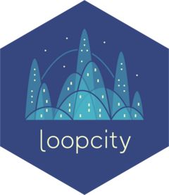
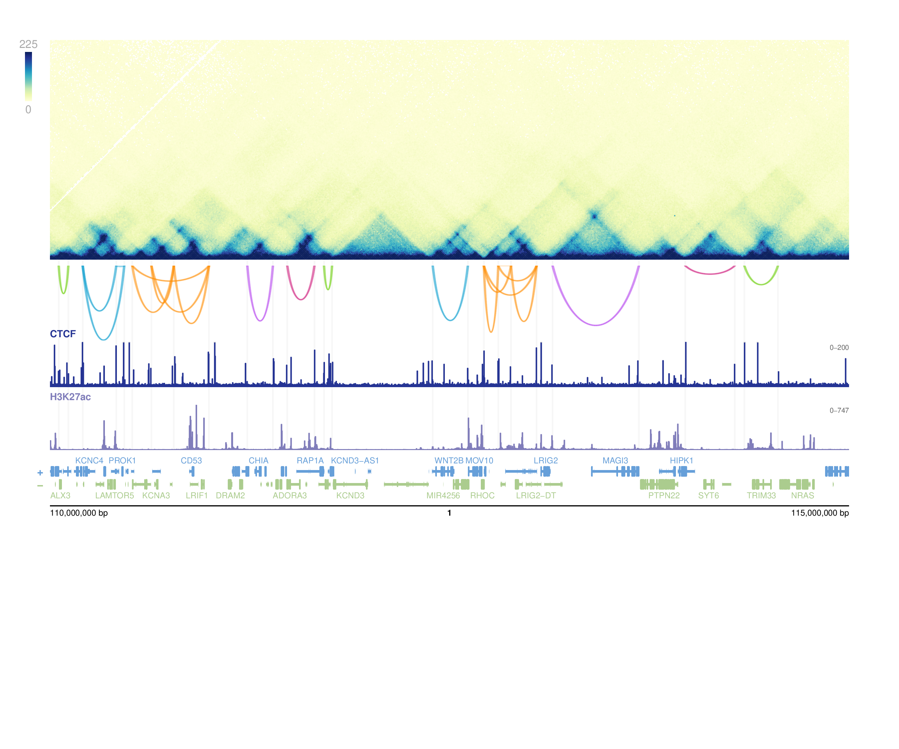

Visualizing loop communities with `plotgardener`
Source:vignettes/plotgardener-integration.Rmd
plotgardener-integration.RmdOverview
A key strength of loopcity is its seamless integration with plotgardener, a
Bioconductor package for creating precise, publication-quality genomic
visualizations. Because loopcity returns standard
GInteractions objects, community calls can be layered
directly alongside Hi-C contact maps, ChIP-seq signal tracks, gene
models, and any other genomic data type supported by plotgardener — all
within a single reproducible script.
The example below demonstrates this workflow using K562 Hi-C data and CTCF/H3K27ac ChIP-seq signal tracks from Bond et al. 2023, showing loop communities on chromosome 1 (110–115 Mb).
Run the loopcity pipeline
library(loopcity)
library(data.table)
library(GenomeInfoDb)
library(InteractionSet)
library(mariner)
hic_file <- "data/processed/hic/GSE214123_MEGA_K562_WT_0_inter.hic"
loops_file <- "data/processed/hic/5kbLoops_0.txt"
loops <- data.table::fread(loops_file) |>
mariner::assignToBins(binSize = 10e3)
GenomeInfoDb::seqlevelsStyle(loops) <- "ENSEMBL"
merged <- mergeAnchors(loops, pixelOverlap = 1)
connected <- connectLoopAnchors(merged, overlapDist = 1e6)
scored <- scoreInteractions(connected, hicFile = hic_file,
resolution = 10e3, norm = "NONE")
communities <- assignCommunities(interactions(scored),
leidenResolution = 0.5)Visualize with plotgardener
Once communities are assigned, they can be plotted alongside any plotgardener-supported data track. Here we add CTCF and H3K27ac ChIP-seq signal tracks beneath the Hi-C map and community arches.
library(plotgardener)
library(glue)
## File paths
ctcf_bw <- "data/processed/chip/GSE213908_MERGE_MEGA_ChIP_CTCF_K562_WT_PMA_0_S.bw"
h3k27ac_bw <- "data/processed/chip/GSE213908_MERGE_MEGA_ChIP_H3K27_K562_WT_PMA_0_S.bw"
## Region of interest — matches Figure 1b/c
hic_chrom <- "1"
bw_chrom <- "chr1"
survey_chromstart <- 110e6
survey_chromend <- 115e6
## Shared parameters
params <- pgParams(
assembly = "hg38",
chrom = bw_chrom,
chromstart = survey_chromstart,
chromend = survey_chromend,
resolution = 10e3,
zrange = c(0, 225),
norm = "SCALE"
)
## Filter communities to region
survey_region <- GenomicRanges::GRanges(
seqnames = hic_chrom,
ranges = IRanges::IRanges(start = survey_chromstart,
end = survey_chromend)
)
a1_in <- GenomicRanges::countOverlaps(
anchors(communities, "first"), survey_region) > 0
a2_in <- GenomicRanges::countOverlaps(
anchors(communities, "second"), survey_region) > 0
loops_region <- communities[a1_in & a2_in]
loops_region <- loops_region[
which(loops_region$score > 0 &
lengths(loops_region$loopCommunity) > 0)
]
## Assign community colours
loopcity_colors <- function(n) {
rep(c("chartreuse3", "deepskyblue3", "darkorange",
"darkorchid2", "deeppink3"), length.out = n)
}
comm_labels <- vapply(loops_region$loopCommunity,
function(x) if (length(x) == 0L) NA_integer_
else as.integer(x[[1L]]),
integer(1L))
comm_idx <- as.integer(factor(comm_labels))
loops_region$color <- loopcity_colors(max(comm_idx, na.rm=TRUE))[comm_idx]
loops_region$color[is.na(comm_labels)] <- "grey70"
loops_region$score_lg <- as.numeric(log2(loops_region$score))
## Draw page
pdf("figures/survey_communities.pdf", width = 9, height = 7.5)
pageCreate(width = 9, height = 7.5, showGuides = FALSE)
x <- 0.5
width <- 8.0
## Hi-C contact map
hic_plot <- plotHicRectangle(
data = hic_file, params = params,
chrom = hic_chrom, zrange = c(0, 225),
x = x, y = 0.4, width = width, height = 2.2
)
annoHeatmapLegend(hic_plot, x = x - 0.25, y = 0.4,
width = 0.07, height = 0.75,
just = c("left","top"), default.units = "inches")
## Community arches
score_range <- range(loops_region$score_lg, na.rm = TRUE)
plotPairsArches(
loops_region, params = params, chrom = hic_chrom,
flip = TRUE, clip = TRUE,
archHeight = "score_lg", range = score_range,
x = x, y = 2.66, width = width, height = 0.75,
fill = loops_region$color, linecolor = loops_region$color
)
## CTCF signal
plotSignal(ctcf_bw, params = params, chrom = bw_chrom,
x = x, y = 3.42, width = width, height = 0.45,
fill = "#253494", linecolor = "#253494",
range = c(0, 200), scale = FALSE)
plotText("CTCF", x = x, y = 3.37, fontsize = 7, fontface = "bold",
fontcolor = "#253494", just = c("left","bottom"))
## H3K27ac signal
plotSignal(h3k27ac_bw, params = params, chrom = bw_chrom,
x = x, y = 4.05, width = width, height = 0.45,
fill = "#807DBA", linecolor = "#807DBA",
range = calcSignalRange(h3k27ac_bw, chrom = bw_chrom,
chromstart = survey_chromstart,
chromend = survey_chromend,
assembly = "hg38", negData = FALSE),
scale = FALSE)
plotText("H3K27ac", x = x, y = 4.00, fontsize = 7, fontface = "bold",
fontcolor = "#807DBA", just = c("left","bottom"))
## Genes and genome label
plotGenes(params = params, x = x, y = 4.54,
width = width, height = 0.5, fontsize = 6)
annoGenomeLabel(plot = hic_plot, x = x, y = 5.07,
scale = "bp", fontsize = 6)
dev.off()The resulting figure shows loop communities as coloured arches
directly above CTCF and H3K27ac signal tracks, with highlighted anchor
positions providing positional context. Because all tracks share the
same pgParams object, coordinates are guaranteed to be
aligned across the full figure.
